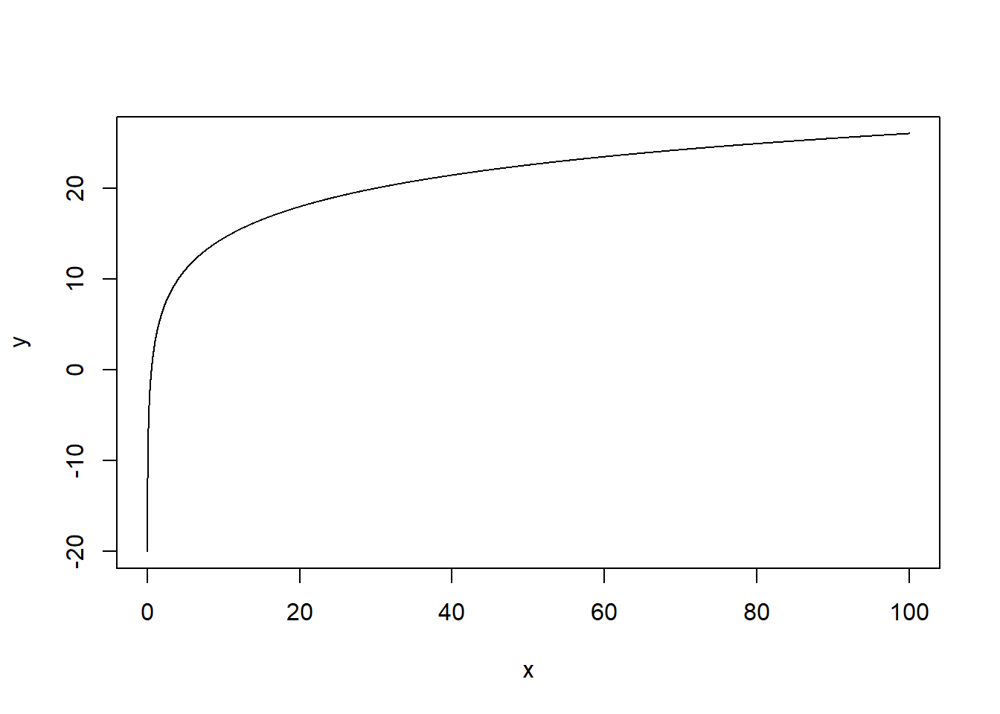
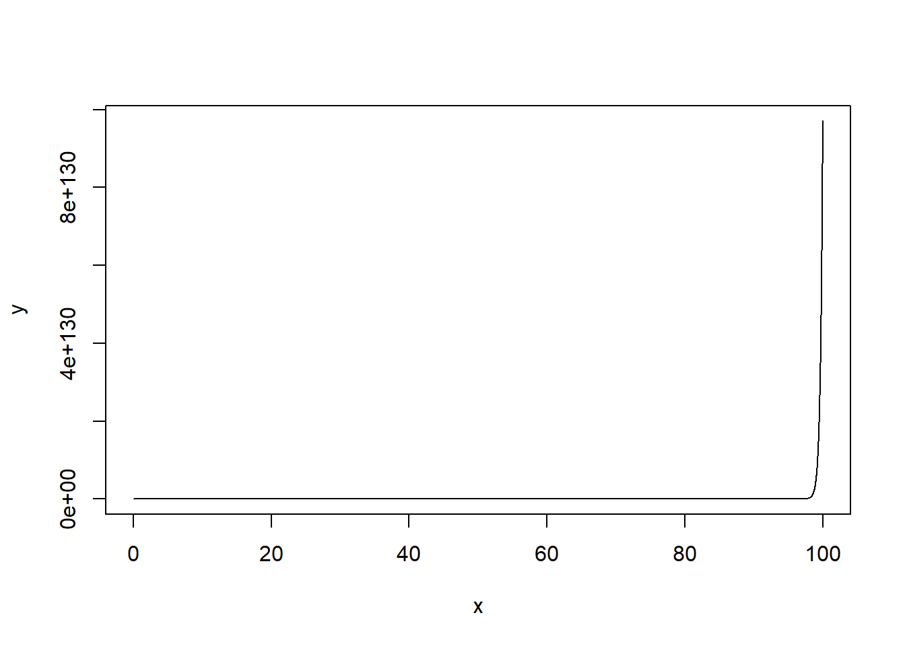
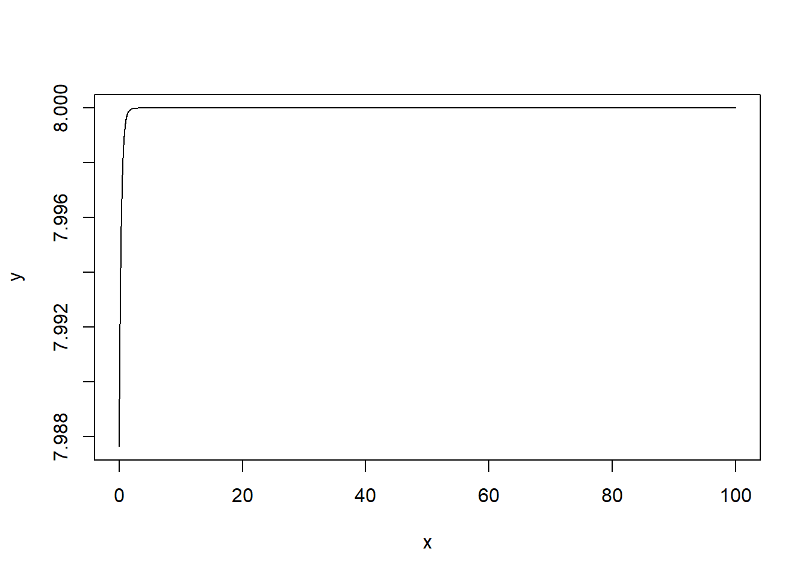

Chapter 3 Assignment 1
Question 1
Establish the shapes of the following sales response functions relating sales Y in units per period to advertising expenditure X ($ per period)
- Below function with a > 0, b > 0; Draw its graph. [5 points]
\[ Y=a+b \ln X \] Answer
x=seq(0,100,0.01)
y=3 + 5*(log(x))
plot(x,y, type="l")
- Below function with parameters a > 0, b > 0. Draw its graph [5 points]
\[ Y=a e^{b X} \text { where } \mathrm{X}>0 \] Answer
x=seq(0,100,0.01)
y=5*((exp)(3*x))
plot(x,y, type="l")
- Below function with parameters a > 0, b > 0 and c >0. Draw its graph. [5 points]
\[ Y=\frac{a}{1+e^{-(b+c X)}}+d \] Answer
x=seq(0,100,0.01)
y=5/((exp)(-(6+3*x))+1) + 3
plot(x,y, type="l")
Question 2
Consider Little’s (short-term response) ADBUDG function that links advertising efforts (A) to sales (S):
\[ S=S_0+S_1 \frac{A^\gamma}{\left(\rho+A^\gamma\right)} \]
Explain the notation, i.e., name the variables and parameters of this model (with their signs). Demonstrate the conditions when this function is concave? Let m denote a constant gross constant margin. What is the optimum advertising level when γ = 1? [10 points]
Answer
S denotes sales A denotes advertising efforts S0 denotes sales at t0 S1 denotes sales at t2
S=expression(S0 + (s1 * A^gamma)/(rho+A^gamma))The first derivative
d1 = D(S, 'A')
d1## s1 * (A^(gamma - 1) * gamma)/(rho + A^gamma) - (s1 * A^gamma) *
## (A^(gamma - 1) * gamma)/(rho + A^gamma)^2The simplified form
\[ \frac{\rho s_1 \gamma A^{\gamma-1}}{\left(A^\gamma+\rho\right)^2} \]
The second derivative
d2 = D(D(S,'A'),'A')
d2## s1 * (A^((gamma - 1) - 1) * (gamma - 1) * gamma)/(rho + A^gamma) -
## s1 * (A^(gamma - 1) * gamma) * (A^(gamma - 1) * gamma)/(rho +
## A^gamma)^2 - ((s1 * (A^(gamma - 1) * gamma) * (A^(gamma -
## 1) * gamma) + (s1 * A^gamma) * (A^((gamma - 1) - 1) * (gamma -
## 1) * gamma))/(rho + A^gamma)^2 - (s1 * A^gamma) * (A^(gamma -
## 1) * gamma) * (2 * (A^(gamma - 1) * gamma * (rho + A^gamma)))/((rho +
## A^gamma)^2)^2)The simplified form
\[ -\frac{\rho s_1 \gamma A^{\gamma-2} \cdot\left((\gamma+1) A^\gamma-\rho \cdot(\gamma-1)\right)}{\left(A^\gamma+\rho\right)^3} \]
If f is twice-differentiable, then f is concave if and only if f ′′ is non-positive (or, informally, if the “acceleration” is non-positive). If its second derivative is negative then it is strictly concave, but the converse is not true, as shown by f(x) = −x4.
The model is S-shaped for γ>1 and concave for 0<γ<1.
When γ = 1, the optimum advertising level can be any amount.
Question 3. In the Tull et al (1986) paper, derive
- Equations (2) (optimum budget) and Equation (3) (ad elasticity) for the diminishing returns sales response function shown in Equation (1). (4 points) What are the sales at the optimum advertising level ? What is the maximized profit at the optimum advertising level? What is the elasticity at the optimum advertising level? (10 points)
Answer
Equations (1)
\[ Q=\alpha+\beta A^x \]
$$
S = m*(+A^x)
$$
S=expression(m*(alpha+beta*A^x))The first derivative
d1 = D(S, 'A')
d1## m * (beta * (A^(x - 1) * x))The simplified form
\[ \beta m x A^{x-1} \] set the frist derivative equal to 0, how did they get A* like this?
Equations (2)
\[ A^*=(x m \beta)^{1 / 1-x} \]
Elasticity
Equations (3)
\[ E_{\mathrm{A}}=x\left(1-\frac{\alpha}{Q}\right) \]
Calculate the maximized profit and the elasticity at the optimum advertising level: plug in A*
- Equations (18) (optimum budget) and Equation (19) (ad elasticity) for the quadratic sales response function shown in Equation (17). What are the sales at the optimum advertising level? What is the maximized profit at the optimum advertising level? What is the elasticity at the optimum advertising level? (10 points)
Answer
Equations (17)
\[ Q=\alpha+\kappa A-\lambda A^2 \]
$$
S = m*(+A-A^2)
$$
S=expression(m*(alpha+kappa*A-lambda*A^2))The first derivative
d1 = D(S, 'A')
d1## m * (kappa - lambda * (2 * A))set the first derivative equal to 0: m * (kappa - lambda * (2 * A)) = 0 A = kappa/2lambda
why did they get this?
Equations (18)
\[ A^*=\frac{m \kappa-1}{2 m \lambda} \]
Equations (19)
\[ E_A *=\frac{\kappa-2 \lambda A *}{\kappa-\lambda A *} \]
the sales at the optimum advertising level:
the maximized profit at the optimum advertising level:
the elasticity at the optimum advertising level:
- Qualitatively, how does the Mantrala et al (1992) paper modify and extend the managerial insights provided by Tull et al (1986) with regard to the ‘flat maximum principle’ in advertising decision making? (This is a short essay type question that should be brief – perhaps a couple of paragraphs - in less than a page.) (5 points)
Tull et al (1986) examined the impact of excessive advertising on aggregate profits and sales under the assumptions of three types of response functions: diminishing returns, saturation, and quadratic sales. According to Tull et al (1986), although excessive advertising can compromise firms’ profits, the effect is subtle; Conversely, excessive advertising can increase sales. In other words, if a firm’s goal is to increase market share, the firm can keep investing in advertising to more than the optimal level at the subtle cost of profit loss. It is called “flat maximum principle”.
Mantrala et al (1992) extended the model by adding marketing resource allocations to submarkets, such as geographic regions, market segments, and product segments. They also assume alternative sales response functions: concave saturation sales, S-shaped saturation sales, and quadratic sales. According to Mantrala et al (1992), investors have to consider investments and returns in the aggregate market and the proportions of investments and returns in the submarkets. They argue that Tull et al (1986) assumes the optimal resource applications in the submarkets, however, if the allocation is less optimal and the response function is concave saturation sales, the profits vary a lot, and the investment in advertising may increase tremendously to reach the same level of sales comparing to the optimal allocation level. In the S-shaped function, resource allocation can even change the parameters and the shape of the response function of the aggregate market. Further, they account for investors’ risk aversion levels, demonstrate different optimal investment choices by risk-averse and risk-neutral investors, and indicate profit variations.